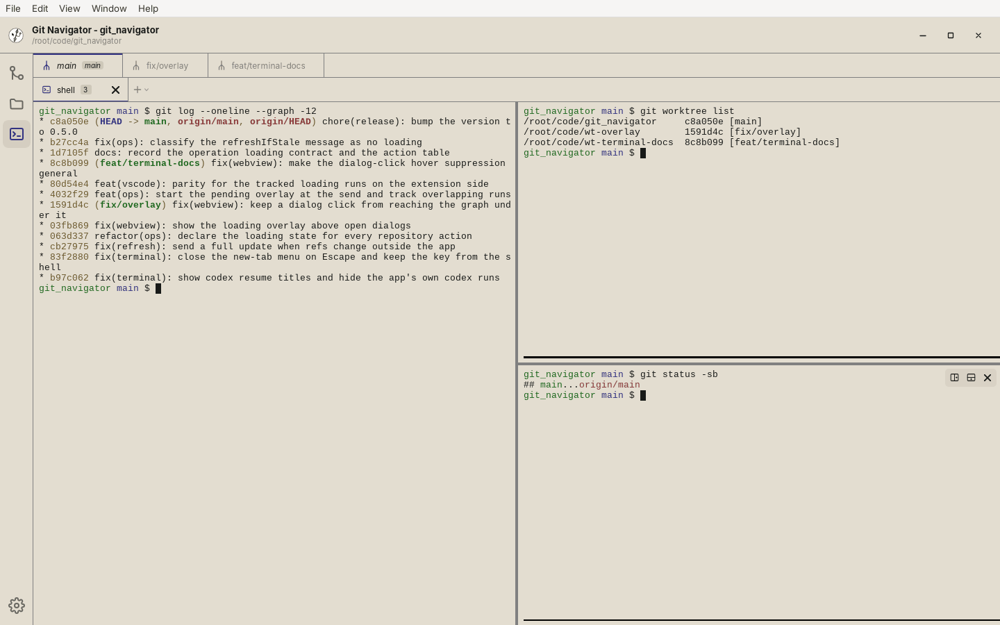
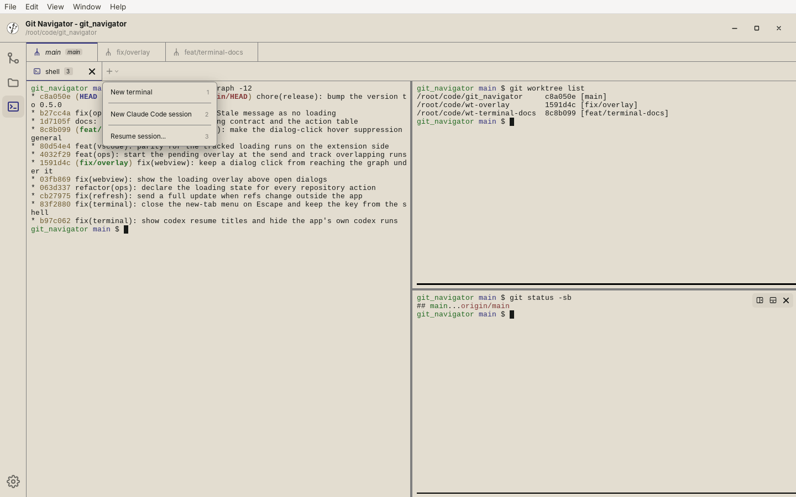
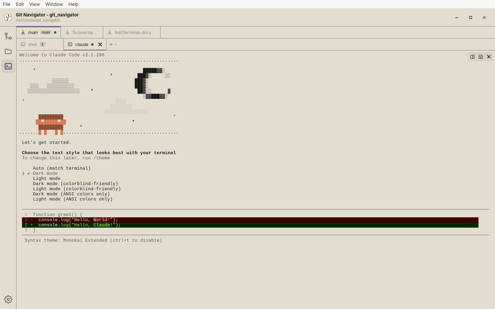
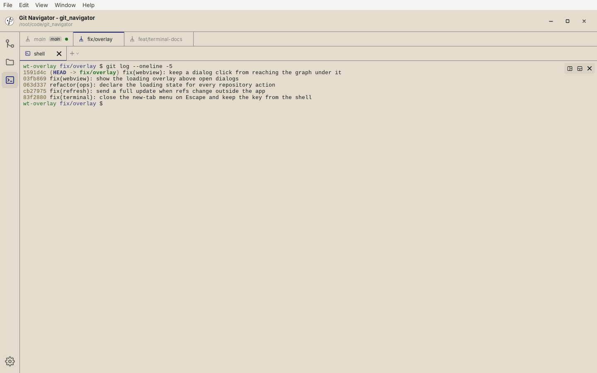

A terminal that knows your worktrees
As of v0.5.0 the desktop app has a Terminal activity in the rail. It runs real PTY shells — so vim, htop, and git log render properly — organized into tabs and split panes, with one tab set per worktree. Your layout and your agent sessions come back when you relaunch.

main worktree. The strip above holds a tab set for each linked worktree.What the Terminal activity does
One tab set per worktree
Each linked worktree gets its own terminal tabs. Switching worktrees swaps the tab set while background shells keep running and streaming, and a worktree only gets a shell once you open it — not merely because it exists.
Tabs and split panes
Open as many tabs as you need and split any pane horizontally or vertically. Drag a divider to resize, and the strip shows which panes are busy and which are idle at a glance.
Agent sessions that resume
Start Claude, Codex, opencode, cursor-agent, or kiro-cli straight from the new-tab picker. Quit the app mid-session and relaunch: the pane resumes the full transcript at zero token cost. Several sessions can share one worktree.
Layouts survive restarts
Worktree sets, tabs, and the split-pane tree are restored on relaunch. Shell panes also get back their last 200 lines of scrollback above a dated divider; agent panes are never stored.
A closer look
-

New-tab picker. The + menu (or Ctrl+Shift+T) opens a plain shell, starts an agent, or resumes an earlier session. It only lists agent CLIs it finds on your PATH, and the digit hints let you pick without the mouse. -

An agent in a tab. Claude Code running in its own tab, in the worktree's directory, right next to the shell tab. This capture shows a first run without credentials; a signed-in agent opens straight into its session and is resumed on the next launch. -

Switch worktrees. Selecting fix/overlayin the worktree strip opens that worktree's own tab set, with the shell already in its directory. Themaintabs keep running in the background.
Getting around
- Open the activity. Click Terminal in the activity rail (above Settings). The first tab opens a login shell in the worktree that is active in the Git activity.
- Open a tab or an agent. Use the + button, or press Cmd+T on macOS / Ctrl+Shift+T on Windows and Linux to open the picker from the keyboard. Press 1 for a shell or 2+ for an agent — the picker lists only the agent CLIs found on your
PATH. - Move between tabs and worktrees. Ctrl+Tab / Ctrl+Shift+Tab cycle tabs in the current worktree. Ctrl+Cmd+Tab on macOS (or Ctrl+Alt+Tab on Windows and Linux) cycles worktrees. The mouse wheel scrolls either tab strip sideways.
- Close safely. Cmd+W on macOS / Ctrl+Shift+W elsewhere closes the active tab. Git Navigator asks first when the tab has several panes, a running command, or a live agent session; answer the dialog with y or n.
- Copy and paste. On Windows and Linux use Ctrl+Shift+C / Ctrl+Shift+V, so plain Ctrl+C always interrupts. macOS uses the usual Cmd+C / Cmd+V.
Frequently asked questions
Is the terminal available in the VS Code extension?
No. The Terminal activity is part of the desktop app only; in VS Code, use the editor's built-in terminal.
Which AI agents can I launch from the terminal?
Claude, Codex, opencode, cursor-agent, and kiro-cli. The new-tab picker only lists the ones it finds on your PATH, and each agent's session is captured so a restore resumes that exact session.
Does Git Navigator save what I type or my terminal output?
Keystrokes are never logged. Shell panes keep their last 200 lines of scrollback so it can be restored after a restart; turn off Restore shell scrollback on restart in the Terminal settings to stop that and delete the stored history. Agent panes are never stored — their agent CLI resumes the transcript itself.
Can I see whether a shell is busy without switching to it?
Yes. The tab strip and the worktree strip both show per-pane working/idle activity, so you can tell at a glance which shells are still running something.